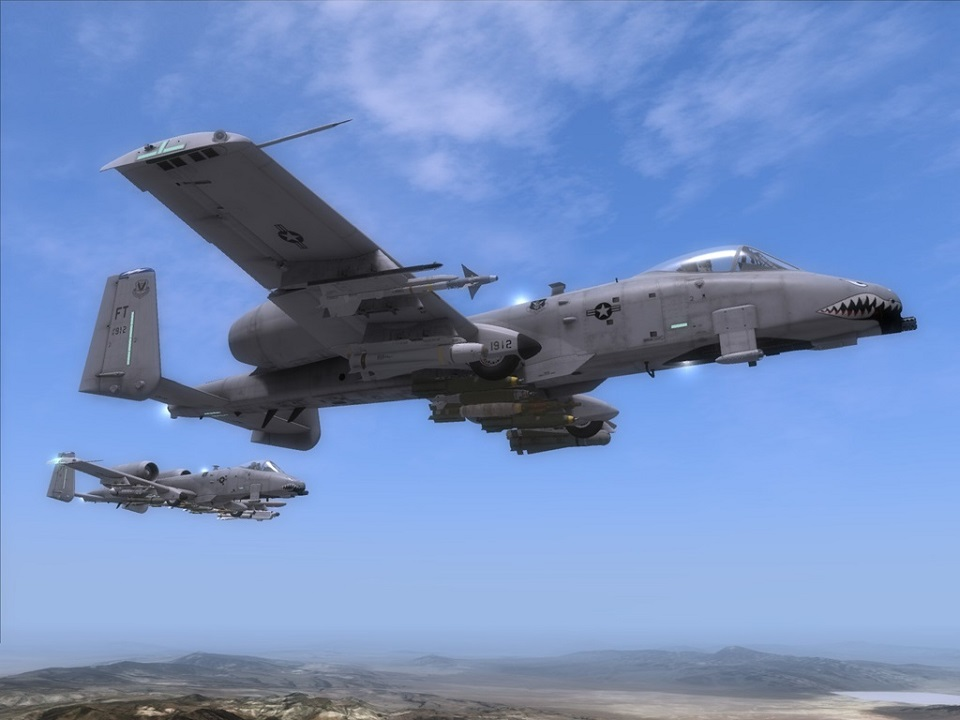
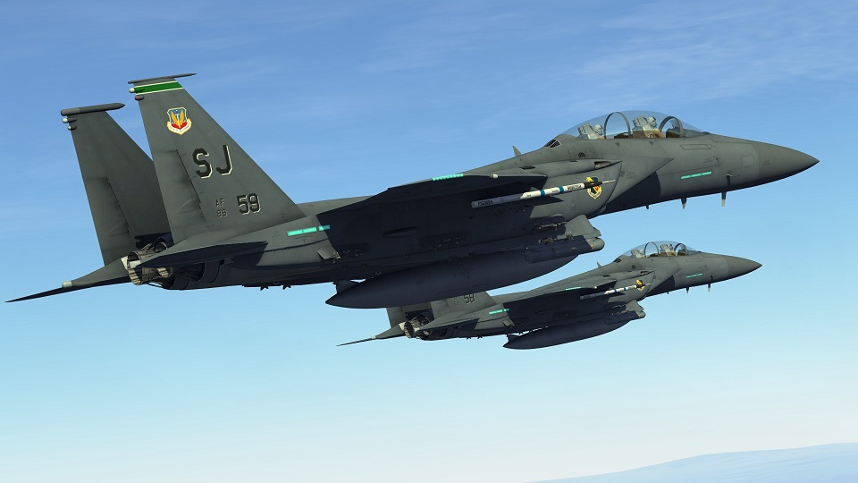

Dual stick setup for Elite Dangerous

Right click and "View image" to see the full size. Be warned, it's big:
Right click and "View image" to see the full size. Be warned, it's big:
*** Joystick map image not yet created ***
Left hand controls throttle/cyclic, right hand controls pitch/yaw/roll.
A10:A Variant
*** Joystick map image not yet created ***
A10:C Variant
*** Joystick map image not yet created ***
F15:C Variant
*** Joystick map image not yet created ***
SU:25 Variant
*** Joystick map image not yet created ***
If you've ever seen TrackIR, you know what this is about. But what if you could build your own for signifciantly less cost? 6 degrees of freedom (triple axis) anaologue head tracking powered by infra red lights and a Sony pS3 eyecam
To see my 3D IR headtracker in action, check out this short video:
Other useful resources for help with setting up your IR head tracker:
EDTracker, PCGamer, Rise of Flight, IL 2 Sturmovik Forums, Hackaday - for a USB powered version.Thanks for checking out my website!
<-|->